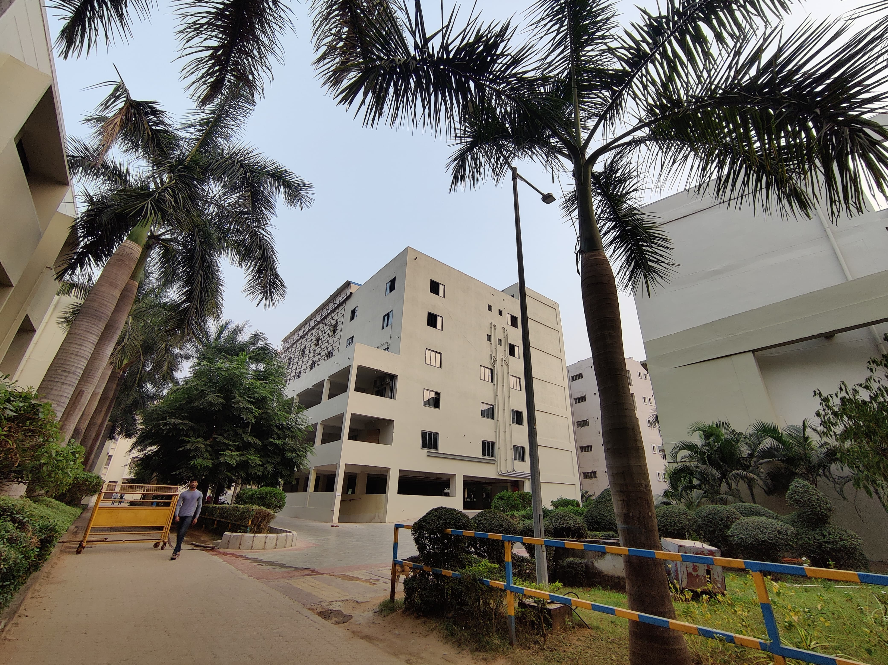

-

ITER
Institute of Technical Education and Research (ITER) is the Engineering College of Siksha 'O' Anusandhan or SOA, located in Bhubaneswar, Odisha.
-

IMS & SUM Hospital
Institute of Medial Sciences & SUM Hospital is the Medical College and Hospital of Siksha 'O' Anusandhan or SOA, located in Bhubaneswar, Odisha.
-

IBCS
Institute of Business and Computer Studies (IBCS) is the Business School of Siksha 'O' Anusandhan or SOA. IBCS is located in Bhubaneswar, Odisha.
-
IDS
Institute of Dental Sciences (IDS) is the Dental School of Siksha 'O' Anusandhan or SOA. IDS is located in Bhubaneswar, Odisha.
-
SPS
School of Pharmaceutical Sciences (SPS) is the Pharmaceutical School of Siksha 'O' Anusandhan or SOA. SPS is located in Bhubaneswar, Odisha.
-
SNC
SUM Nursing Colleges (SNC) is the Nursing School of Siksha 'O' Anusandhan or SOA. SNC is located in Bhubaneswar, Odisha.
-
SHM
School of Hotel Management (SHM) is the faculty of Hospitality and Tourism Management of SOA or Siksha 'O' Anusandhan in Bhubaneswar.
-
IAS
Institute of Agricultural Sciences (IAS) is the Agriculture School of Siksha 'O' Anusandhan or SOA. IAS is located in Bhubaneswar, Odisha.
-
IVS & AH
Institute of Veterinary Science and Animal Husbandry is the faculty of Veterinary Sciences and Animal Husbandry of SOA in Bhubaneswar
-
SNIL
SOA National Institute of Law or SNIL is the faculty of legal studies of SOA or Siksha 'O' Anusandhan. SNIL is located in Bhubaneswar, Odisha